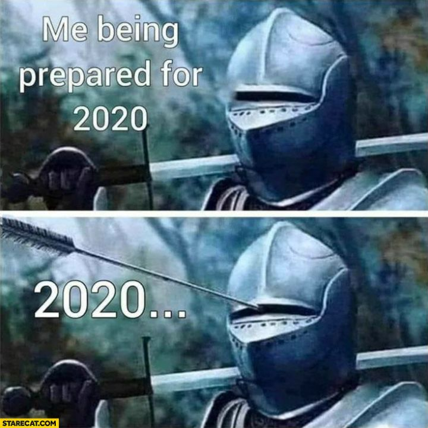
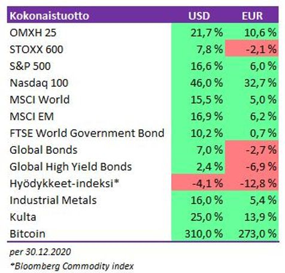
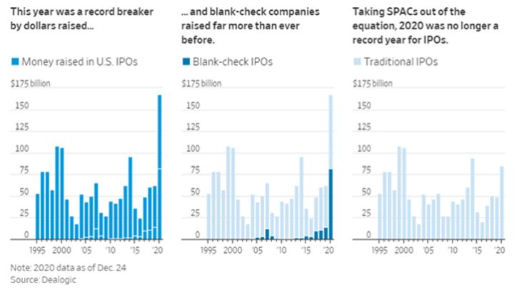
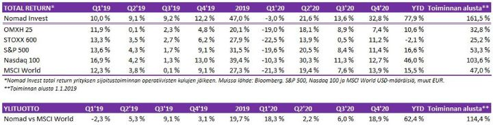
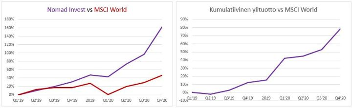
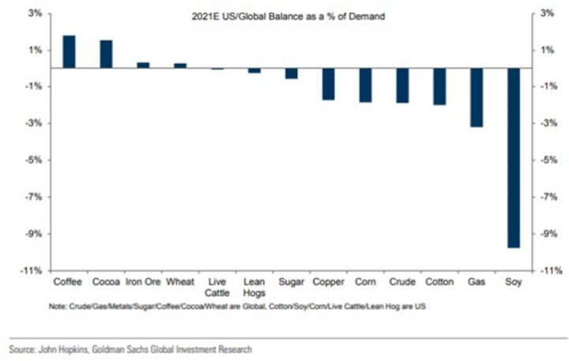
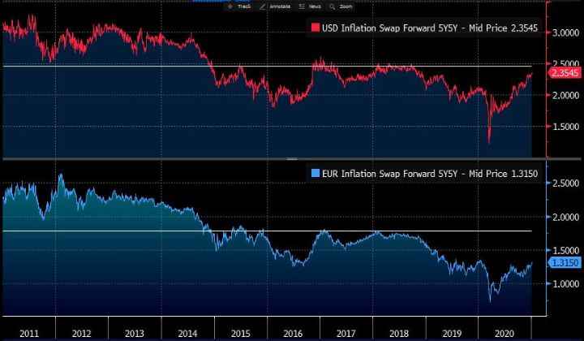
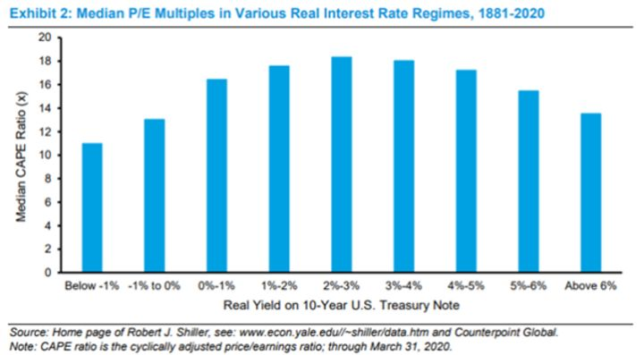
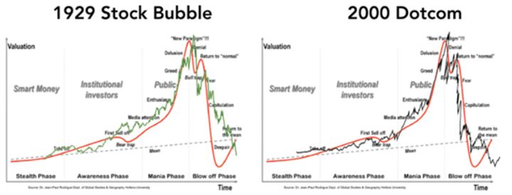
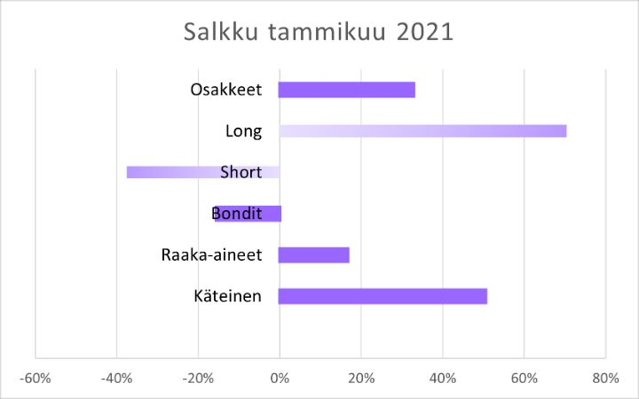

Vuoden 2020 jälkiviisastelut

“Everyone has a plan until they get punched in the mouth.”
– Mike Tyson
Ihmisillä on tapana ajatella, että aika, jona elämme, olisi jotenkin erityistä. Kuinka koko ajan olisimme jonkin suuren muutoksen äärellä, vaikka tosiasiassa kehitys kehittyy ja maailma menee eteenpäin taustalla melko tasaisesti.
Vuosi 2019 tuntui siinä hetkessä erityiseltä. Kauppasodan värittämä ”kurssien ja tunteiden vuoristorata”, kuten kirjoitimme tasan vuosi sitten. Vielä tuolloin tammikuun 10. päivänä olimme autuaan tietämättömiä siitä, mitä vuosi 2020 oli tuova tullessaan. Itse asiassa tuolloin oli jo ollut kytemässä tartuntatauti, joka olisi tuleva muuttamaan maailmaa.
Nyt voimme kerrankin rehellisesti sanoa eläneemme yhden modernin historian merkittävämmistä vuosista.
Sisältö:
- Ojasta allikkoon
- Menneen vuoden kokonaistuotto +77.9%
- Pelikirja vuodelle 2021
1. Ojasta allikkoon
Mitä pidempi aikahorisontti, sitä todennäköisemmin optimismi kannattaa. Sijoittajan on kuitenkin hyvä säännöllisin väliajoin miettiä, mikä voisi mennä pieleen. Aktiivinen sijoittaminen (vrt. indeksisijoittaminen) lajina on sellainen, jossa parhaimmatkin ovat väärässä ~50% ajasta. Kyse on siitä, kuinka paljon voittaa, kun on oikeassa, ja kuinka vähän häviää, kun on väärässä.
Vuosi sitten listasimme potentiaalisia riskejä kauppasodan eskaloitumisesta osakkeiden ja joukkovelkakirjojen korkeisiin arvostustasoihin, sekä taantuman mahdollisuudesta USA:n presidentinvaaleihin. Olivathan ne kaikki mahdollisia negatiivisia lopputulemia, mutta ylimmäksi uhkaksi muodostuivat ne, jotka olimme määritelleet tuntemattomiksi. Aina on ”määrittelemätön määrä riskejä, joita emme edes osaa kuvitella olevan”, kirjoitimme. Se riski realisoitui nyt koronan muodossa.
Riski on oikeastaan aina tuntematon. Ajatellaan tulevaisuuden muodostuvan eri skenaarioiden todennäköisyyksillä painotettuna keskiarvona. Epävarmuutta on aina, mutta epävarmuus on eri asia kuin riski. Jos tiedämme kaikki mahdolliset skenaariot, ei varsinaisesti ole riskiä, vaan pelkästään tuntematon lopputulema. Toki on ennusteriski siitä, ovatko tapahtumien arvioidut todennäköisyydet oikeat. Mutta itse tapahtumista ei ole riskiä, ainoastaan epävarmuus siitä, mikä vaihtoehdoista lopulta tapahtuu.
Todellinen riski on se, johon ei ole edes osattu varautua ja joka lopulta realisoituu. Siksi pitkäaikaisen sijoittajan olisi hyvä aina pystyä varautumaan myös näihin ”tuntemattomiin tuntemattomiin” joko jättämällä turvamarginaalia käteisen muodossa tai ainakin vähintään visualisoimalla mahdolliset isommat kurssilaskut ja kirjoittamalla ylös sijoitussuunnitelman etukäteen niiden varalta.
Vuosi 2020 jää historian kirjoihin poikkeuksellisen hyvänä sijoitusvuotena. Globaalin pandemian ja talouden äkkipysähdyksen, sekä niistä seuranneen inhimillisen tragedian keskellä tuskin kukaan olisi sitä etukäteen osannut odottaa. Ei edes Juhan af Grann tai Aino Kassinen. Tänäkin vuonna kannatti olla sijoitettuna.
Samoin, jos ajatteli, kuten monet muut (itsemme mukaan lukien), että markkina tulisi vähintään testaamaan maaliskuun pohjat kesällä (olisihan talous vielä pitkään taantumassa) eikä lopulta sopeutunut tilanteeseen, joutuu vieläkin odottamaan (me sopeuduimme). Yhdelle laskeviin kursseihin ostaminen on vaikeaa. Toiselle nouseviin kursseihin ostaminen on vaikeaa. Useimmille molemmat ovat vaikeaa, kun ympärillä maailma on paniikin vallassa.
Lähes kaikki varallisuusluokat tuottivat varsinaisen hyvin. US dollarin heikentyminen tosin söi suhteellisia euromääräisiä tuottoja.

Jälkiviisaus on helppoa, mutta maaliskuun markkinan myllerryksissä kukaan ei voi väittää nähneensä kuinka monet teknologia- ja softayhtiöt tulisivat kolmin- tai nelinkertaistumaan. Tai kuinka yhtiöt ilman liikevaihtoa pelkällä liiketoimintakonseptilla ja haaveellisella visiolla jopa kymmenkertaistuisivat. Suunnan on voinut enunstaa. Liikkeen voimakkuutta tuskin.
Tai kuinka vuosikymmenet hiljaiseloa viettäneet SPAC:t (Special Purpose Aqcuisition Company), nousisivat eloon rytinällä. Niissä sijoittaja käytännössä antaa valkoisen sekin osakkeita vastaan yhtiölle, joka ei vielä omista mitään. Toiveena on, että se mitä sekin varoilla ostetaan, olisi satumaisen tuottavaa. SPAC:sit ovat tapa tuoda uusia yhtiöitä pörssiin. Ne huomioiden, pörssilistautumiset nousivat huomattavasti korkeammalle tasolle kuin IT-kuplassa yhtiöiden kiirehtiessä myymään osakkeitaan kiimaisille sijoittajille.

ESG-kuplaan puhallettiin lisäilmaa sekä uusien pörssilistautumisten muodossa että palkitsemalla vanhoja yhtiöitä korkeammilla arvostuskertoimilla heidän kiillottaessaan imagoaan ympäristöystävällisemmillä strategioillaan. Samoin yritysostot palkittiin ostamalla ylös sekä ostokohteiden että ostajien osakkeet. Hällä väliä, vaikka historiallisesti 50-80% yritysostoista epäonnistuvat lisäarvon luomisessa.
Vuosi 2020 on myös vuosi, jona yksityissijoittajat pääsivät oikein kunnolla sijoittamisen, mutta eritoten osakespekuloinnin makuun. Osa selittynee sillä, että muu vedonlyönti meni tauolle. Osa selittynee sillä, että markkinoiden tuotot ovat olleet sen verran houkuttelevia. Ymmärtäähän sen, kun ostaa lähes mitä tahansa otsikoissa tai keskustelupalstoilla hehkutettua osaketta, tekee kymmenien prosenttien tuottoja hetkessä.
Ilmiö on nähty myös Suomessa. ”Treidaaminen” on suositumpaa kuin koskaan. Jos vielä muutama vuosi sitten päivätyökseen treidaavia oli parikymmentä, on nyt heitä (ainakin Twitteristä saadun kuvan perusteella) kenties satoja, ellei enemmänkin. Yhä useampi samaistuu treidaamiseen. On perustettu internetin keskusteluryhmiä, joissa on tuhansia jäseniä. Jos pari vuotta sitten Nordnetilla oli vaikeuksia saada trading-huoneensa täyteen, on nyt Helsinkiin jopa perustettu uusia huoneita, joihin muutetaan ympäri Suomen. Jotkut jopa irtisanoutuvat sijoittamiseen liittymättömistä päivätöistään veivatakseen täyspäiväisesti.
Vuodessa nähtiin ihmisluonteen ja massahysterian molemmat äärilaidat. On osittain ajauduttu ojasta allikkoon.
Vankkoina kansankapitalismin puolestapuhujina, olemme iloisia nähdessämme sijoittamisen kiinnostavan yhä useampia. Toivommekin kaikille onnea ja menestystä. Edellä kuvattua tuskin kuitenkaan tapahtuisi, jos takana olisi usean vuoden laskumarkkina.
Kansankapitalismin puolesta on paljon tehtävää. Kaikkien sijoittajien on tehtävä omat virheensä ja löydettävä oma tiensä. Toivomme kuitenkin, että aktiivisesta sijoittamisesta kiinnostuneet tekisivät läksynsä ja ymmärtäisivät sen, kuinka poikkeuksellisia vuoden tuotot olivat. Ettei kävisi niin, että kuplan puhkeaminen – milloin se tapahtuukaan – aiheuttaisi lannistavat tappiot, joka sysäisi kansankapitalismille jälleen takapakkia.
Vahvalla nousulla syödään tulevaisuuden kakkua. Monet kasvuosakkeista ovat erinomaisia liiketoimia. Niiden arvostukset antavat kuitenkin vain vähän varaa olla väärässä. Monen asian pitää mennä hyvin ja hyvin pitkään. Vain harvat voittavat, suurin osa häviää. Autoyhtiöitäkin oli reilu sata vuotta sitten pelkästään USA:ssa tuhansia. Autot olivat voittava teknologia, mutta suurin osa yhtiöistä meni nurin.
Jos salkku muodostuu osakkeista, jotka ovat jo nousseet satoja prosentteja, ja joiden arvostukset hipovat pilviä, on hyvä ymmärtää, että kyseisille osakkeille ei olisi ongelma eikä mikään laskea 30% tai 50% tai enemmänkin. Ne olisivat monet silti kovassa nousussa vuoden takaisiin tasoihinsa nähden, ja monet olisivat silti edelleen korkealle arvostettuja. Monilla on ollut fantastinen vuosi. Mutta mitä hyötyä on 50% tai 100% tai 200% vuosituotosta, jos seuraavassa hetkessä antaa siitä suurimman osan pois? Sadan prosentin nousu vaatii ”vain” 50% laskun joutuakseen takaisin lähtöruutuun.
Markkina voi myös jatkaa edelleen ylöspäin, mutta yksittäisten sijoittamistyylien ja teemojen odotetut tuotot palaavat lopulta historialliseen trendiinsä. Siksi ei kannata juosta tuottojen perässä ja antaa rahojaan sijoitettavaksi parhaiten pärjänneille salkunhoitajille. Yhden vuoden perusteella ei voi tehdä mitään johtopäätöksiä tulevaisuuden performanssista. Samaa ajattelua on myös hyvä soveltaa omaan salkkuunsa.
Twitterissä (etenkin nuoremman sukupolven) aktiivisesti sijoittavat esittelevät satumaisia tuottojaan ja jotkut jopa suorastaan halveksivat indeksi- ja konkarisijoittajia, joille vuosi ei ole ollut yhtä satumainen. Menestyneiden pitkänlinjan konkarisijoittajien ei koskaan näe arvostelevan muiden sijoittajien tekemisiä. Päinvastoin he pyrkivät koko ajan löytämään heikkouksia omasta prosessistaan ja miettivät, mikä voisi mennä pieleen. He tietävät oman kokemuksensa perusteella, kuinka vaikeasta lajista on kyse.
Michael Mauboussin on kirjoittanut paljon siitä, kuinka taito on paradoksaalista. Monien asioiden lopputuloksiin vaikuttavat taidon lisäksi myös tuuri. Kun ihmisestä tulee kyseisessä asiassa taidokkaampi, nousee tuurin merkitys lyhyellä aikavälillä. Taito nimittäin on konsistenttiä. Tuuri sen sijaan on satunnaista. Siksi lyhyellä aikavälillä taidokkaimpien ja vähemmän taidokkaiden suoritusten erot pienenevät. Pidemmällä aikavälillä tuurin merkitys pienenee ja taito pääsee esiin.
Ihmiset lisäksi rakastavat tarinoita. Lopputuloksesta ollaan herkemmin tekemässä tarina, joka liittyy suorittavaan henkilöön. Ajatellaan, että tekemisellä oli suora syys-seuraussuhde lopputulokseen. Tuurin merkitys usein unohtuu täysin.
Siksi ei ole kannattavaa tehdä pidemmälle kantavia johtopäätöksiä niin lyhyen ajan kuin yhden vuoden performanssin perusteella. Se pätee muiden suoritusten arvioimiseen, mutta etenkin myös meidän kaikkien oman suoritusten arvioimiseen.
Tänä vuonna markkinajumalat olivat poikkeuksellisen suosiollisia monille sijoittajille. Sitä teki omaa juttuaan ja se vain sattui toimimaan äärimmäisen hyvin. Tulevaisuus tulee näyttämään oliko kyse tuurista vai oikea-aikaisesta taidosta hyödyntää poikkeuksellisia olosuhteita. On kuitenkin turha luulla liikojaan itsestään. Samat markkinajumalat tulevat lopulta nöyristämään.
Kun sijoittaminen ja treidaus tuntuvat helpoilta, on syytä varautua muutokseen. Ylimielisyys kostautuu lopulta. Sitä luulee tietävänsä, mitä tekee, ja sitten suuren ajattelijan Mike Tysonin sanat käyvät toteen. Tai kuten konkari Paul Tudor Jones on sanonut:
”My biggest losses have always come after I have had a great period and I started to think that I knew something"
Se on hyvä pitää mielessä.
2. Menneen vuoden kokonaistuotto +77.9%
Viimeisestä kvartaalista muodostui Nomadien lyhyen sijoitushistorian selvästi paras niin tuottoprosenteissa, mutta etenkin absoluuttisena tuottomääränä. Tuottoprosenttina 32.8% oli lähes yhtä hyvä kuin vuoden kolme ensimmäistä kvartaalia yhteensä (+33.9%). Sen ansiosta koko vuoden tuotoksi muodostui +77.9%. Vastaavat tuottoluvut OMXH25 +7.4% ja +10.6% sekä MSCI World +13.9% ja +15.5%.


Pari huomiota tuottoluvuista. Ensinnäkin tarkkasilmäiset huomaavat, että kuvan kumulatiivinen ylituotto vs MSCI World ei ole päätynyt 114.4%:iin, joka on kokonaistuottomme toiminnan alusta vähennettynä MSCI Worldin kokonaistuotolla. Kyseinen kuva kertoo, kuinka paljon isommaksi alkupääoma on kasvanut, kuin jos sama summa olisi ollut sijoitettuna vertailuindeksiin.
Toisekseen ilmoittamamme tuottoluku on yhtiön sijoitustoiminnan tuotot operatiivisten kulujen jälkeen. Laskemme operatiivisiksi kuluiksi yhtiön liiketoiminnan kaikki muut kulut pois lukien maksetut palkat. Näin mittaamme itsellemme, kuinka kannattavaa on päätoimisesti hommaa tehdä, sen sijaan, että laittaisi pääomat indeksiin ja menisi itse palkkatöihin. Siinä mielessä tuottoluku myös eroaa sijoitusrahaston tuotosta. Esimerkiksi rahastoyhtiön maksamat vuokrat tai käyttämien Bloomberg-terminaalien kustannukset eivät päätyisi itse rahaston kuluiksi. Meillä ne siis sisältyvät tuottolukuun.
Viimeinen neljännes ja koko vuosi olivat poikkeukselliset. Etenkin, kun pääomat ovat koko ajan kasvaneet, voi suoritusta pitää kokonaisuuden kannalta varsin hyvänä. Toisaalta alkuvuoden näkemykselliset jäätymiset rokottivat tulosta. Ottaen huomioon, kuinka pitkän matkan markkina kulki (ensin alas 30-40% ja sitten ylös 70-100%), olisi jopa toivonut pystyvän parempaan, etenkin kun jäädyimme ensin matkalla alas ja sitten vielä matkalla ylös (kuten olemme kirjoittaneet aikaisemmin).
Lopulta kuitenkin loppuvuoden revitysten jälkeen, voi lopputulosta pitää jossain määrin jopa liiankin hyvänä. Olisi toivonut, että jotain olisi jäänyt seuraavallekin vuodelle. Vastaavan menon on vaikea nähdä jatkuvan vuonna 2021. Monista teeseistämme on mielestämme paras terä jo hinnoiteltu pois.
Kuten aina, suorituksen arvioimisessa ei tule keskittyä lopputulokseen, johon liittyy paljon satunnaisuutta. Tällä kertaa lopputuloksesta vain sattui muodostumaan älyttömän hyvä. Sen sijaan tulee keskittyä sijoitusprosessiin. Siinä tapahtui paljon hyviä kehityksiä edellisvuoteen nähden.
Sijoitustoiminnassa paljon hyvää, mutta myös parannettavaa:
- Ensimmäisen vuosipuoliskon jäätymiset korjaantuivat. Hyväksyimme loppukesän ja alkusyksyn aikana, että uutta pohjien testausta ei tulla näkemään. Muutos näkemyksessä tapahtui kreivin aikaan, sillä loppuvuonna nähtiinkin vahva markkina. Jos osakepaino oli Q2:lla keskimäärin alle 30% ja Q3:lla noin 35%, lähdimme Q4:ään yli 40%:n painolla. Satunnaisena hetkenä 50% painoa voi pitää meidän täyspainona (tarvitsemme vapaata pääoma erinäisiin erikoistilanteisiin), joten olimme Q4:lle tultaessa omaan strategiaamme nähden varsin hyvässä etukenossa. Itse asiassa toimintamme historian korkeimmassa painossa.
- Aikaisempi yltiövarovaisuus on menossa oikeaan suuntaan. Jos kaksi riskinkaihtajaa laittaa yhteen, ei summa yllättäen olekaan riskinrakastaja. Päinvastoin. Tänä vuonna olemme kuitenkin saaneet positiokokoja kasvatettua. Edelleen kuitenkin tuottokäyrämme kehittyy varsin tasaisesti ilman isompia notkahduksia alaspäin. Se kertoo siitä, että riskiä ei ole ollut tarpeeksi päällä. Väistämättömiä epäonnistumisia tulee aina, olemmehan oikeassa vain reilut puolet ajasta. Tekeminen on kuitenkin odotusarvoisesti positiivista, joten lopputuloskin olisi parempi, jos riskiä olisi enemmän päällä. Edelleen on siis parannettavaa, etenkin kun absoluuttinen sijoitettava pääoma on myös ollut kasvamaan päin.
- Krooninen alipaino kasvuyhtiöissä kohentui. Strategiamme heikko lenkki on alusta alkaen ollut vähäinen paino kasvuyhtiöissä. Vaikka osa strategiaamme on olla mukana momentumissa, olemme lähtökohtaisesti olleet haluttomia ostaa kalleimpia hype-osakkeita (päinvastoin myimme mielestämme räikeimpiä lyhyeksi loppuvuodesta). Niin tulemme tekemään jatkossakin, mutta nyt olemme pystyneet lisäämään avoimemmin mielin semijärkevinä pitämiämme kasvuyhtiöitä ja paikka paikoin osallistumaan kiimaralleihin spekulaatiomielessä. On hyvä huomata, että momentum ei tarkoita samaa kuin kasvu. Kasvuyhtiöissä vaan on ollut paras momentum.
- Yhtiön operatiivinen alkukankeus on helpottanut. Vuosi 2019 oli toimintamme ensimmäinen. Allekirjoittaneelle se oli myös ensimmäinen vuosi yrittäjänä. Uusi yritys toi mukanaan paljon uutta niin yhdessä kuin erikseen. Vaikka olemmekin tunteneet toisemme pitkään, oli kahden suomalaisen miehen opittava uusia keskinäisen kommunikaation nyansseja. Olemme nyt huomattavasti dynaamisempi kahden hengen organisaatio kuin vuosi sitten.
Parhaita caseja neljänneksellä olivat:
- Asemoituminen arvoon ja raaka-aineisiin. Kuten olemme kirjoittaneet tänä vuonna, olimme kasvattaneet painoja syklisissä arvosektoreissa kuten pankeissa ja metalliyhtiöissä, mutta etenkin öljyssä ja öljy-yhtiöissä. Nämä heräsivät henkiin rokoteuutisten myötä.
- Hype-osakkeiden oikea-aikainen lyhyeksi myynti. Ilman liikevaihtoa kymmeniin miljardeihin arvostetut sähköautovalmistajat kuten Nikola, NIO ja Workhorse. WFH-teemasta hyötyneiden ja korkealle arvostetut kasvuyhtiöt kuten Peloton ja Zoom. IPO:n jälkeen lock upin päättymistä ennakoiden Snowflake. Räikeältä huijaukselta vaikuttava GSX. Muun muassa näitä myimme onnistuneesti lyhyeksi. Myös Teslaa olemme myyneet indeksinousun myötä, mutta se ei ole toiminut odotetun lailla. Olemme selvästi keventäneet Tesla-shorttia katalyytin mentyä, mutta katsomme vielä kuinka osake kehittyy alkuvuonna. Näistä lisää täällä.
- Oikea-aikaiset ostot kryptovaluutoissa. Haistelimme oikein kryptojen uuden nousun aloittaessamme ostot Bitcoinissa ja Ethereumissa, kun Bitcoin oli heinäkuussa noin 9200 dollaria ja juuri uuden nousun kynnyksellä. Tuplasimme molemmat positiot lokakuussa, kun Bitcoin oli noin 11500 ja näytti pääsevän kunnolla vauhtiin. Kevensimme pikkuhiljaa nousun myötä ja myimme viimeisen puolisko Bitcoinia, kun se pääsi aikaisempiin huippuihin 19000 dollarissa. Ajatus oli ostaa takaisin, jos se tekee uudet huiput. Sen tosin missasimme, jonka voi laskea selkeäksi virheeksi. Loput Ethereumit myimme heti alkuvuodesta nähtyyn 20%+ nousuun, joka muistutti trendin väsytykseltä.
- Cargotec/KCR-spread oli lahja, joka jatkoi antamistaan. Fuusion läpimenemistä odotettaessa osakkeiden välinen suhde on heilunut varsin mukavasti ollen välillä ~4% alle fair valuen ja välillä saman verran päälle. Sitä on pystynyt tekemään molempiin suuntiin jo useamman kerran. Tälläkin hetkellä sitä on päällä.
Epäonnistuneita caseja olivat:
- Kulta sukelsi kuin kivi. Salkkumme kulmakivi kulta, joka toimi hyvin Q2:lla ja jota kevensimme kesällä, tuli alas. Vaikka Bitcoinilla on arvon säilyttäjänä selkeitä etuja suhteessa kultaan, emme ole valmiita sivuuttamaan kultaa tärkeänä osana salkkua. Se suojaa laskevia reaalikorkoja vastaan sekä toimii hajauttavana turvana perinteisten turvasatamien valtiolainojen ollessa kalliita. Olemme kasvattaneet kullan painon uudelleen noin kymmeneen prosenttiin.
- Useita menetettyjä mahdollisuuksia. Jälleen kerran missasimme useamman hyvän nousun jäätyämme ämpyilemään, tai syyllistyttyämme perisyntiimme eli liian aikaisin myymiseen. Kun kaikki lentää, jää väkisinkin joistakin rannalle. Menetetty mahdollisuus harmittaa aina enemmän kuin epäonnistunut sijoitus. Ja nyt lista misseistä on poikkeuksellisen pitkä. Pitää kuitenkin olla armollinen itselleen ja olla tyytyväinen lopputulokseen.
3. Pelikirja vuodelle 2021
Tulevia sijoitusteemoja miettiessä pitää olla varovainen, ettei liiaksi ankkuroi itseään niihin. Tuolloin riskinä on, että näkee asiat sellaisena kuin toivoo näkevän (vahvistusharha) eikä sellaisina, kun ne ovat. On kuitenkin hyvä tarkastella, millainen nykyhetki on, ja millaisia skenaarioita mahdollisesti voisi olla tulossa tietäen, että koko harjoituksen saattaa joutua heittämään romukoppaan (kuten viime vuonna).
Uuteen vuoteen lähdettäessä osakemarkkinoiden olosuhteita voisi kuvailla seuraavasti: Sentimentti ja positioituminen ovat varsin kireällä. Arvostustasot indeksitasolla eivät ole liian korkeat etenkin suhteessa korkotasoihin. Laajasta kuplasta ei voida vielä puhua, mutta pinnan alla on paikka paikoin selvää kupliintumista. Keskuspankit ovat suosiollisia. Samoin fiskaalipuolelta voi odottaa edelleen lisäpaukkuja reaalitalouteen.
Tämä alkuasetelma puoltaa mielestämme lyhyen ajan varovaisuutta, mutta pidemmälle vuoteen mentäessä suhtaudumme rakentavasti osakkeiden näkymiin. Asetelma on kuitenkin herkkä tunnelman ollessa jo varsin hurmoksellinen. Myllyyn on lyöty sen verran paljon vettä (ja lisää on tulossa), joten turbiinin lähtiessä kunnolla käyntiin, voi tilanne eskaloitua herkästikin. Siitä on jo selviä paikoittaisia merkkejä. Mielissämme oovat Howard Marksin sanat: "Move forward, but with caution."
Seuraamme ainakin seuraavia neljää, monella tapaa toisiinsa linkittyvää, teemaa tänä vuonna:
- Reflaatio?
- Kasvu- ja inflaatioyllätys?
- ESG-kupla?
Reflaatio?
Reflaatiolla tarkoitetaan raha- ja talouspoliittisen stimuluksen avulla yritettyä kasvun ja inflaation pönkitystä. Siinä missä aikaisemmin rahapolitiikka on ollut kuin työntäisi käärmettä pyssyyn, on nyt sen laajuus yhdistettynä fiskaalipuolen toimiin tunkenut rahaa systeemiin kuin Maailman sotien aikana konsanaan.
Rokotteen myötä näyttää siltä, että koronakoettelemukselle ollaan saamassa todennäköisesti loppu. Odotamme, että loppukesään mennessä laumasuojan mahdollistamiseksi vaadittu kriittinen massa on saatu rokotettua ja ensi syksynä oltaisiin jo selvästi lähempänä ”normaalia” kuin nyt.
Koronan myötä tullut taantuma ei ollut normaali syklinen tapahtuma, jossa ylikuumentumisen jälkeen sulateltaisiin ylijäämiä. Kyseessä oli systeemin ulkopuolinen sokki. Monilla aloilla oli hyvä tilanne ennen koronaa ja työttömyyskin oli kansainvälisesti hyvällä tasolla.
Monilla aloilla on patoutunutta kysyntää, joka tilanteen normalisoitumisen myötä pääsee purkaantumaan. Samalla joillakin aloilla tuotantoketjut ovat olleet solmussa, tarkoittaen paineita tuotteiden loppuhintoihin. Toisaalta koronan myötä monet alat ovat myös tehokkaampia ja se rokottaa osaltaan inflaation mahdollisuutta. Samoin työttömien pitäisi päästä varsin pikaisesti takaisin töihin.
Monista raaka-aineista on kuitenkin tarjontapuolella alijäämää. Goldmanin arvion mukaan mm. kuparin, öljyn ja kaasun kysyntä ylittää selvästi tarjonnan ensi vuonna (kuva). IEA arvioi, että vuonna 2020 energiainvestoinnit laskivat enemmän kuin koskaan aikaisemmin. Eniten laskivat öljy- ja maakaasuinvestoinnit, heidän arvionsa mukaan -32%.

Jos kasvu ei ole maailmassa enää yhtä harvinaista pienenee kasvuyhtiöiden suhteellinen arvostuspreemio. Jos samalla inflaatio-odotukset heräävät raaka-aineiden nousun myötä, voi koroissa olla viimein painetta ylös. Se voisi tarkoittaa, että viimeisen parin kuukauden aikana nähty arvon suhteellinen nousu voisi saada jatkoa. Tässä apua voi tulla systemaattisista strategioista, kuten momentumista, joka taaksepäin katsovassa vertailussa allokoi uutta pääomaa parhaiten menestyneille sektoreille.
Nyt puhutaan siis syklisistä sektoreista, kuten energia, teollisuus ja pankit sekä maantieteellisiä alueita, kuten Eurooppa ja kehittyvät markkinat. Arvostusmielessä, osasta on mielestämme paras pihvi jo syöty. Esimerkiksi osa koronasta eniten kärsineistä sektoreista, kuten lentoyhtiöt tai majoitusala, hinnoittelevat rotaation ensimmäisen vaiheen jälkeen jo lähestulkoon täyttä elpymistä, jos huomioidaan yhtiöiden osakeannit ja velkaantumiset.
Reflaatio-skenaariossa ei olisi yllättävää, jos kalliit teknologiayhtiöt ja eritoten hypesektorit kuten sähköautot ja patteriteollisuus tulisivat alas tai ainakin jäisivät kokonaismakkinalle.
Skenaariolle on vain yksi haaste: monet muutkin odottavat näin tapahtuvan.
Positiokyselyiden ja pankkien strategien näkemyksien perusteella ollaan varsin yksimielisiä reflaatiotreidin jatkumisesta. Koko kuvio kulminoituu jälleen Yhdysvaltain dollariin (lue viime vuoden katsauksesta tarkemmin, miten) ja korkoihin. ”Myy USD” jos jokin on kuitenkin nyt konsensustreidi. Samoin sijoittajat ovat vahvasti asemoituneet jo pitkien korkojen nousuun.
Haaste on arvioida mikä on sentimentti suhteessa siihen, miten todelliset varallisuusarvoja liikuttavat rahavirrat tulevat uimaan. Rahaa on edelleen paljon rahamarkkinarahastoissa ja niitä on edelleen vähemmän arvostrategioissa ja kehittyvillä markkinoilla kuin ennen koronakriisiä.
Ideaali tilanne olisi, jos jonkin syyn perusteella saataisiin reflaatiotreidiin ensin hieman takapakkia, jolloin positioituminen ei olisi niin kireällä. Tällainen ”syy” voisi olla esimerkiksi koronan rokotusten kestäminen, mutaatiot ja taudin leviämisen kiihtyminen Joulun ja Uuden Vuoden juhlintojen jälkeen.
Tämä ei kuitenkaan muuttaisi perusskenaariotamme koronan selättämisen suhteen, jolloin markkinan korjatessa olisimme paremmin mielin lisäämässä reflaatiotreidiin.
Kasvu- ja inflaatioyllätys?
Edellisestä on luonnollisena jatkumona myös skenaario, jota pidämme suurimpana ”tunnetuista” riskeistä. Sen todennäköisyys voi olla suurempi, kuin mitä markkinat tällä hetkellä odottavat ja siksi sen mahdollisuuteen on hyvä varautua.
Kuten kirjoitimme kesällä, olemme nyt mielestämme siirtyneet uuteen paradigmaan. Vaikka yleismantra on ollut ”don’t fight the Fed”, voidaan myös argumentoida, etteivät Fed ja muut keskuspankit ole enää entiseen tapaansa kontrolloimassa rahan kiertoa taloudessa.
Valta on nyt siirtynyt poliitikoille. Heillä on mekanismit, joilla rahaa saadaan tehokkaammin suoraan talouteen. Sitä on nyt koronan myötä opittu käyttämään, ja siihen tullaan myös jatkossa herkemmin turvautumaan.
Jahka globaalin talouden pyörä pyörähtää liikkeelle, voi sen vauhti lopulta yllättää ylöspäin. USA:n teollisuuden luottamusluvut ISM:t nousivat jo joulukuussa 60.7 pisteeseen ylittäen ennusteet (56.6). Robecon mukaan luku vastaisi kuuden prosentin BKT:n vuosikasvua, joka olisi kovin kasvutahti sitten 1980-luvun.
Keskuspankit ovat ilmoittaneet, etteivät he ole nostamassa korkoja vähään aikaan eivätkä myöskään ole niin tarkasti vaalimassa kahden prosentin inflaatiotavoitettaan. Fedikin on kertonut tavoittelevansa kahden prosentin keskimääräistä inflaatiota. ISM:ien tuottajahinnat olivat jo korkeimmillaan sitten 2018 alun, tasolla, joka on indikoinut jopa noin 4% kuluttajahintojen vuosinousutahtia.
Kun rahan kiertonopeus normalisoituu ja poikkeuksellisen suuri rahamäärä taloudessa lähtee liikkeelle, voi inflaatio yllättää ylöspäin, jolloin koroissa olisikin ennakoitua enemmän nousupainetta.
Tässä kohdin on sanottu keskuspankkien tulevan ”kontrolloimaan” korkokäyrää (Yield Curve Control, YCC) ja estämään se, etteivät korot nousisi liiaksi. Se voi kuitenkin osoittautua mahdottomaksi, jos inflaatio on jo valmiiksi vauhdissa. Keskuspankkien koronnousun estäminen vaatisi lisää likviditeetin tunkemista systeemiin. Keskuspankit nimittäin ostavat rahamarkkinatuotteita pitääkseen niiden korot alhaalla.
Markkinoiden inflaatio-odotukset ovat olleet nousussa siten, että USA:ssa viiden vuoden päästä tulevien seuraavien viiden vuoden inflaation (5y5y inflaatioswap) hinnoitellaan olevan jo lähes menneiden kymmenen vuoden keskiarvossa (kuvan valkoinen viiva) ja joka tapauksessa jo 2020 lähtötason yläpuolella. Euroopassa lähestytään 2020 lähtötasoa, mutta ollaan vielä melko selkeästi edellisten kymmenen vuoden keskiarvon alapuolella.

Keskuspankit eivät onnistuneet luomaan inflaatiota. Nyt poliitikot saattavat onnistua siinä. Riskinä on, että keskuspankeilla tulee kiire kääntää takkiaan ja aloittaa koronnostot paljon luvattua aikaisemmin. Jos markkinat johonkin ovat tottuneet, on se etteivät keskuspankit höllää kaasua. Pelkästään tämän ajattelun kyseenalaistamisen alkaminen ja orastava ennakoiminen voi saada liikettä aikaiseksi.
Diskonttokorkojen lähtötason ollessa niin alhainen, ovat osakkeiden nettonykyarvot suhteessa herkempiä niiden liikkeille, kuin jos korot olisivat korkeammalla. Herkkyyttä lisää, että monien yhtiöiden kassavirrat ovat poikkeuksellisen pitkällä tulevaisuudessa (duraatioriski). Näiden yhtiöiden suhteellinen osuus on myös ollut vahvassa nousussa indeksien painoissa. Morgan Stanleyn mukaan yhden prosenttiyksikön nousu USA:n 10-vuotisessa korossa nykytasoltaan (~1%) laskisi S&P500-indeksin PE-kerrointa 18%, ceteris paribus. Nasdaq 100-indeksin PE laskisi 22.5%.
IT-kuplassa markkina oli kuitenkin laajemmin kuplassa kuin nyt, arvostustasojen ollessa tuolloin huomattavasti korkeammat. Korot huitelivat myös 5-6 prosentissa. Emme huolestuisi vielä liiaksi prosentin noususta. Tärkeämpään on myös reaalikorko. Historiassa osakkeiden arvostuskertoimiin on tullut painetta vasta kun reaalikorko on noussut yli kolmen.

Markkinoilla suunta on monesti tärkeämpi kuin absoluuttinen taso, sillä markkinat on eteenpäin katsovat mekanismi. Siksi korkoa, etenkin USA:n 10-vuotinen, johon suurin osa maailman varallisuusarvoista linkittyy, on hyvä mielestämme pitää silmällä.
ESG-kupla?
Vuonna 2020 ESG nousi ”kaikkien” huulille. EU:n koronapaketista kolmasosa sidottiin ilmastotavoitteiden saavuttamiseen. Japani pyrkii hiilineutraaliksi vuonna 2050, Kiina 2060. Bidenkin on kampanjalupauksenaan kertonut allokoivansa kaksi biljoonaa dollaria puhtaan energian investointeihin.
George Soros on sanonut, että kun hän aistii kuplan muodostuvan, ryntää hän itsekin ostamaan lisäten omalta osaltaan bensaa spekulatiivisiin liekkeihin. Soros on myös tuonut tunnetuksi markkinoiden refleksisyyden käsitteen. Hinta ajaa sentimenttiä, joka ruokkii investointeja, joka puolestaan pönkittää hintaa ja niin edelleen, kunnes homma menee överiksi ja kuvio pyörähtää päälaelleen.
Esimerkkejä kuplista löytyy maailman sivu. Ne näyttävät toistavan tiettyjä samoja refleksisyydellä selittyviä kaavoja. Ovathan kupliin ilmaa puhaltavat osapuolet loppu viimein ihmisiä, ja ihmisluonne ei liiammin ole historian saatossa muuttunut.
ESG on tärkeä teema, mutta etenkin puhdas energia ja sen liitännäiset alat täyttävät jo merkit potentiaaliselle kuplalle. Nyt teema on saavuttanut institutionaalisen kiinnostuksen tason ja myös suuri yleisö ja media ovat kiinnostuneet aiheesta. Oheisen kuvion analogiassa ollaan kenties jo hyvässä vauhdissa maanista vaihetta.

Kehitys on sekä uhka että mahdollisuus. Mahdollisuus siinä mielessä, että pyrimme olemaan jotenkin mukana, kun tilanne lähtee paraboliseksi, ja koitamme kärkkyä myöhemmin mahdollisia lyhyeksimyyntipaikkoja.
Uhka se on siinä mielessä, että asiat, jotka eivät voi kestää ikuisesti, voivat mennä paljon pidemmälle kuin näkee sen mahdollisena (ajoitusriski). Kuplan puhkeamisilla voi olla myös odottamattomia seurauksia sentimentin leviämiseen laajemmin markkinaan, mutta etenkin muihin kupliviin aloihin.
Kirjoitimme teemasta tarkemmin edellisessä kvartaaliraportissa, josta kiinnostuneet voivat lukea aiheesta tarkemmin.
Mitä riskejä näemme?
- Inflaatioyllätys. Ks. yllä.
- Bondikuplan puhkeaminen. Inflaatio tai paremmaksi koetun turvasataman tarve voi johtaa joukkovelkakirjojen isoihin myynteihin. Tämä voi tukea perinteistä turvasatamaa kultaa, mutta myös esim. Bitcoinia sekä osakkeita.
- USA:n politiikka. "Blue sweep" voi poikia, paitsi buustia puhtaan energian yhtiöille, myös mahdollisia veronkorotuksia ja suitsia teknologiajäteille. Kirjoitushetkellä tosin senaatti näyttää tosin olevan menossa 50-50, jolloin veronkorotukset voi olla vaikea saada läpi. Riittää, kun vain yksi demokraatti jää arpomaan, niin homma kaatuu.
- Kiinan ja USA:n kauppasota ja Kiinan eristäytyminen. Biden ei myöskään ole tunnettu minään Kiinan kaverina. Nettona kauppasodan retoriikan odotetaan helpottavan. Kiina on kuitenkin eristämässä itseään pyrkiessään omavaraiseksi myös teknologiateollisuudessa. Kiinan politbyroo on menossa entistä enemmän autoritääriseen suuntaan, josta viimeisimpänä esimerkkinä Alibaban ja Jack Man kohtelu. Sellainen voi saada Länneltä sadattelua ja nostattaa retoriikkaa. Kauppasodalla ja globalisaation takapakilla olisi myös inflatorisia vaikutuksia.
- Teknologiayhtiöiden tai puhtaan energian kuplan puhkeaminen. Ks. yllä.
- Lähi-Idän tilanne. Iran vastaan Saudit ja Israel voi eskaloitua nyt, kun Trump ei enää puikoissa. Tällä voi olla vaikutuksia öljyyn ja sitä kautta myös inflaatioon.
- Tuntemattomat tuntemattomat. Täällä se todellinen riski piilee.
Salkku tammikuussa 2021
- Lähdimme uuteen vuoteen vajaan 33% osakepainolla.
- Olemme vahvasti kallellaan arvoon, kun taas lyhyenä on hypeä. Osa shorteista on markkinaneutraaleja paritreidejä.
- USA:n ja Ranskan pitkiä valtiovelkakirjoja on lyhyenä pitkien korkojen nousun varalta. Ne ovat vielä maltillisia, sillä osake-longimme ovat pitkälti samaa korkojen nousu- ja kasvutreidiä.
- Raaka-aineet ovat kultaa ja öljyä.

Disclaimer:
Kolumnit sisältävät mielipiteitä ja mahdollisesti tietoa omista sijoituksistamme, jotka voivat vaihdella päivästä toiseen. Mitään, mitä kirjoitamme ei tule ottaa sijoitussuosituksena. Kuten teksteissämme painotamme, päätökset kannattaa aina tehdä itse. Lukija vastaa itse voitoistaan ja tappioistaan.